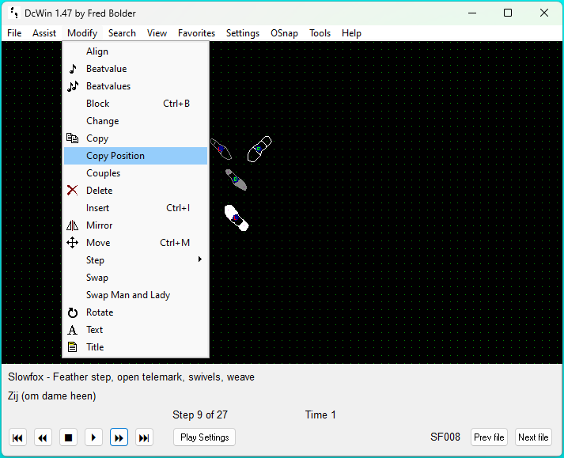

This Windows software is programmed by Fred Bolder. DcWin works under Windows 7, but Windows 10 or
Windows 11 is
recommended.
There are a lot of dance figures included, but you can also add your own.
There are a lot of dance figures included, but you can also add your own.
Downloads
Send an e-mail to fgh.bolder@gmail.com for questions and/or feedback.